아주 빠른 CSS 엔진의 내부 : Quantum CSS (aka Stylo)
작성자 : Lin Clark
원문: https://hacks.mozilla.org/2017/08/inside-a-super-fast-css-engine-quantum-css-aka-stylo/
이 번역은 원작자인 Lin Clark의 허가를 받아 번역하였습니다.
아마도 파이어폭스를 빠르게 만들기 위해 파이어폭스를 다시 작성하고 있는 프로젝트 Quantum에 대해 들어보았을 것입니다. 우리는 실험적 브라우저인 Servo에서 일부 파트를 변경했고, 이게 엔진의 다른 부분을 아주 빠르게한다는 걸 알게되었습니다.
프로젝트를 아직 비행 중인 제트기에서 제트 엔진을 교체하는 것과 비교해봅시다. 컴포넌트를 컴포넌트 단위로 변경하기 때문에 컴포넌트가 준비되는 즉시 Firefox에서 그 효과를 볼 수 있습니다.
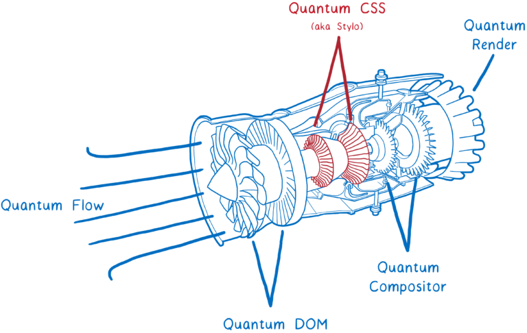그리고 Servo에서 나온 첫번째 핵심 컴포넌트인 (이전에 Stylo라고 부르던)
Quantum CSS 엔진은 지금 바로 Nightly 버전에서 테스트할 수 있습니다.
브라우저에서 about:config 로 이동하여 layout.css.servo.enabled 를 true 로 설정하기만 하면 됩니다.
이 새로운 엔진은 서로 다른 4개의 브라우저에서 최첨단 기술 혁신을 결합해 새로운 Super CSS 엔진을 만듭니다.
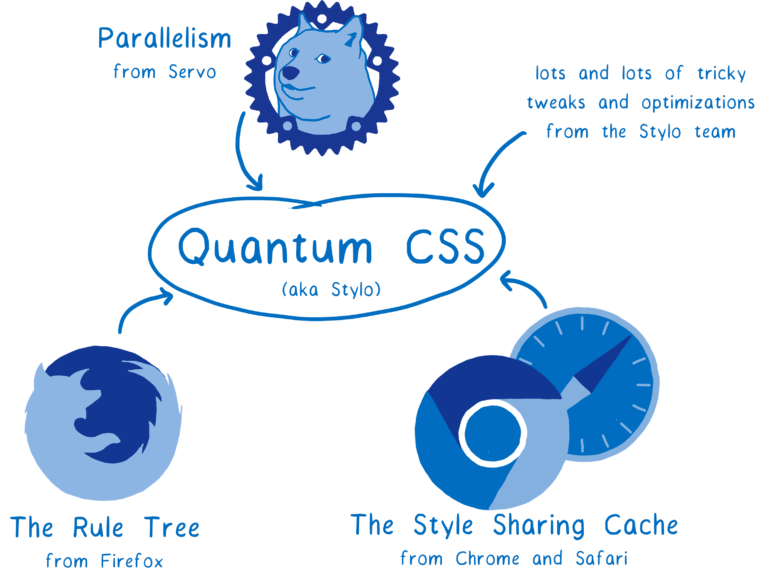최신 하드웨어의 장점을 살려, 컴퓨터의 모든 코어에서 작업을 병렬로 처리합니다. 이는 2배, 4배, 심지어 18배까지 빠르게 실행할 수 있음을 의미합니다.
또한 위 그림에서 볼 수 있듯 다른 브라우저의 기존 최첨단 최적화 기능을 결합합니다. 따라서 병렬로 실행하지 않더라도, 여전히 빠른 CSS 엔진이 됩니다.
하지만 CSS 엔진이 어떻게 동작할까요? 먼저 CSS 엔진이 어떻게 동작하는 지 살펴보고 다른 브라우저와 어떻게 호환하는 지 살펴봅시다. 그리고 나면 Quantum CSS가 어떻게 빨라질 수 있는 지 알 수 있을 것입니다.
CSS 엔진은 무슨 일을 하는가?
CSS 엔진은 브라우저 렌더링 엔진의 일부입니다. 렌더링 엔진은 웹사이트의 HTML 파일과 CSS 파일을 가져온 후 스크린에 픽셀화시켜 나타냅니다.
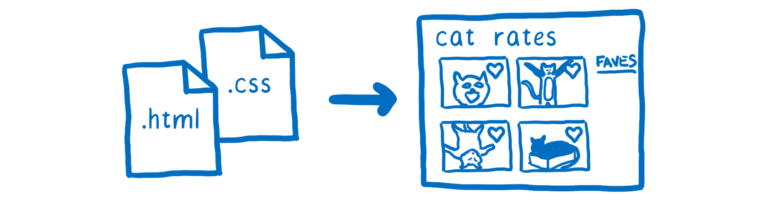각 브라우저는 렌더링 엔진을 가지고 있습니다. Chrome에서는 Blink. Edge에서는 EdgeHTML. Safari에서는 WebKit. 그리고 Firefox에서는 Gecko라고 부릅니다.
파일을 가져와 픽셀화시키기 위해, 모든 렌더링 엔진은 기본적으로 같은 일을 수행합니다.
-
DOM을 포함하여 브라우저가 이해할 수 있는 객체로 파일을 해석(parse)합니다.이 시점에서 DOM은 페이지의 구조를 알고 있습니다. 또한 요소들간의 부모 / 자식 관계에 대해서도 알고 있습니다. 하지만 그 요소가 어떻게 생겼는 지는 모릅니다.
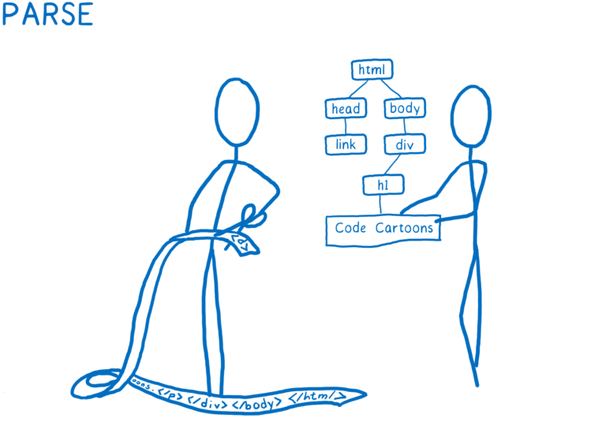 -
요소가 어떻게 보여야 하는 지 알아냅니다. CSS엔진은 각 DOM 노드에 대해 어떤 CSS 규칙이 적용되는 지를 계산합니다. 그런 다음 해당하는 DOM 노드에 대한 각 CSS 속성값을 계산합니다.

-
각 노드의 면적 및 화면(screen)상 어디에 위치해야하는 지 알아냅니다. 박스는 단순히 DOM 노드를 나타내는 것이 아니라... Text 같이 DOM 노드 내부에 있는 box가 있을 수도 있습니다.
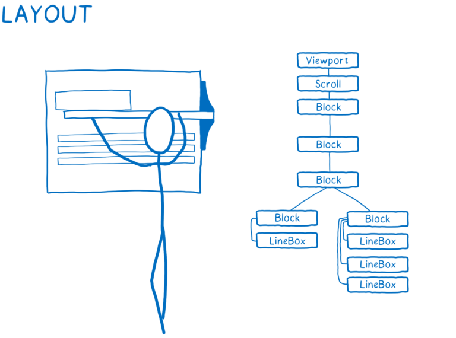 -
다른 박스를 그립니다. 이 작업은 여러 레이어에서 발생할 수 있습니다. 저는 이 과정을 과거에 종이 위의 얇은(onionskin) 레이어에 손으로 그려낸 애니메이션처럼 생각합니다. 이렇게 하면 다른 레이어에서 다시 칠하지 않고도 한 레이어만 변경할 수 있습니다.
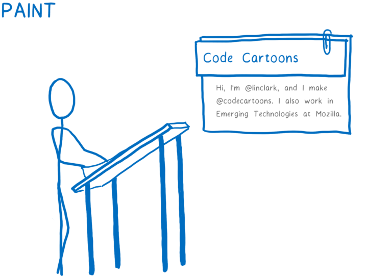 -
다른 페인트 레이어를 가져와서 transform 같은 컴포저 전용 속성을 적용하고 하나의 이미지로 변환합니다. 이는 기본적으로는 함께 겹쳐진 레이어 그림을 찍는 것과 동일합니다. 이 이미지는 화면에 렌더링됩니다.
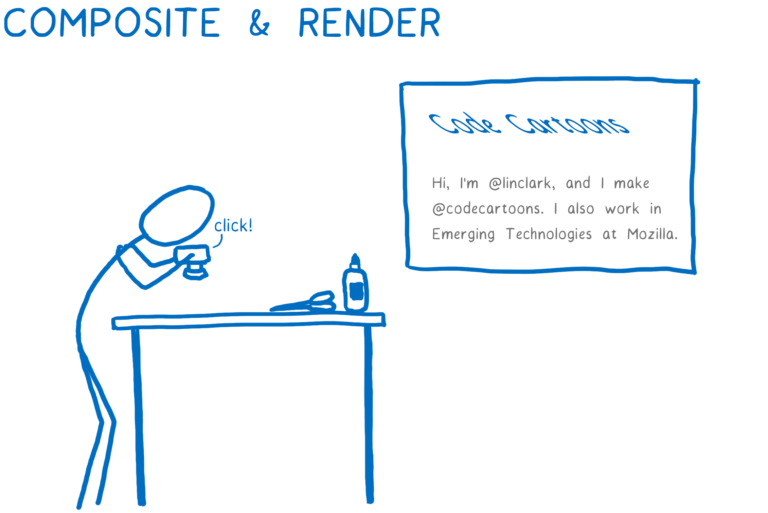
이는 스타일 계산을 시작할 때 CSS 엔진이 두가지 것들을 가지고 있음을 의미합니다.
- DOM 트리
- 스타일 규칙의 목록
각 DOM 노드를 하나씩 차례로 살펴보고 해당 DOM 노드의 스타일을 파악합니다. 이 작업의 일환으로 스타일 시트가 해당 속성 값을 선언하지 않더라도 DOM 노드는 모든 CSS 속성 값을 제공합니다.
저는 누군가가 form을 작성하고 검토하는 것과 동일하다고 생각합니다. 각 DOM 노드에 대한 forms 중 하나를 채울 필요가 있습니다. 그리고 각 form 필드에는 답변이 필요합니다.

이를 수행하기 위해, CSS 엔진에 두가지 것이 필요합니다.
- 어떤 규칙을 node에 적용시킬 지 - 즉 셀렉터 매칭
- 어떤 빠진 값을 부모 값을 가져올 지 혹은 기본 값을 쓸 지 - 즉 cascade
셀렉터 매칭
이 스텝에서는 DOM 노드와 일치하는 규칙을 목록에 추가합니다. 여러 규칙이 일치할 수 있기 때문에 동일한 속성에 대해 여러개의 선언이 있을 수 있습니다.
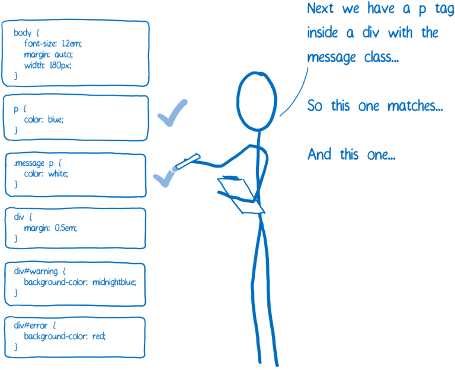추가로 브라우저는 자기 스스로 몇가지 기본 CSS를 가지고 있습니다 (유저 에이전트 스타일 시트, user agent style sheet 라고 부릅니다). CSS 엔진이 선택할 값을 어떻게 알 수 있을까요?
여기에는 특이성(Specificity) 규칙이 적용됩니다. CSS 엔진은 기본적으로 스프레드 시트를 생성합니다. 그런 다음 다른 열을 기반으로 선언을 정의합니다.
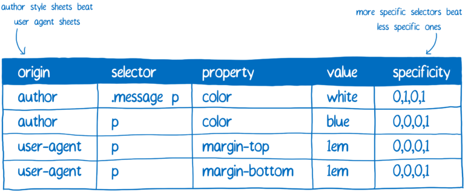가장 높은 특이성을 가진 규칙이 승리합니다. 이 스프레드 시트를 기반으로 CSS 엔진은 가능한 값을 채웁니다.
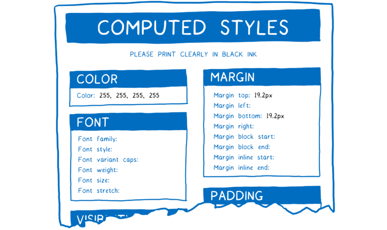나머지는 cascade를 사용합니다.
The cascade
cascade는 CSS 작성 및 관리를 쉽게 합니다. cascade 덕분에 body에 color 속성을 지정하기만 해도 (더 구체적인 재정의가 없다면) p 요소나 span, 혹은 li 요소 안에 있는 모든 텍스트에 그 색상이 들어갑니다.
이렇게 하기 위해 CSS 엔진은 form의 빈 박스를 봅니다. 속성이 기본으로 상속되는 경우 CSS 엔진은 트리 위로 이동하여 조상 중 하나에 값이 있는 지 확인합니다. 조상의 값이 하나도 없거나 상속하지 않는 경우, 기본 값을 가집니다.
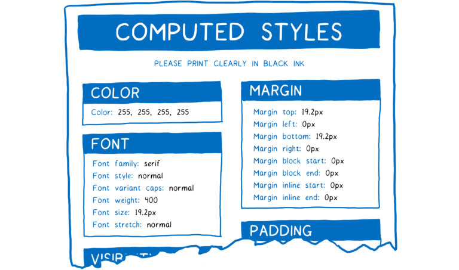이제 이 DOM 노드에 대한 모든 스타일이 계산되었습니다.
Sidenote: 스타일 구조체 공유 (Style struct sharing)
제가 이 글에서 보여준 form은 약간 잘못된 표현입니다. CSS에는 수백가지 속성이 있습니다. 만약 CSS 엔진이 각 DOM 노드의 각 속성에 대한 값을 보유하고 있다면 곧 메모리 부족에 빠질 것입니다.
그 대신, 엔진은 일반적으로 스타일 구조 공유라는 것을 합니다. 스타일 구조체(style struct)라는 다른 객체에 일반적으로 함께 쓰이는 데이터(폰트 속성같은 것)를 저장합니다. 그리고 나서 동일한 객체에 모든 속성을 가지는 대신 계산된 스타일 객체는 포인터만 가지고 있습니다. 각 카테고리에는 이 DOM 노드에 적합한 값을 가진 스타일 구조체에 대한 포인터가 있습니다.
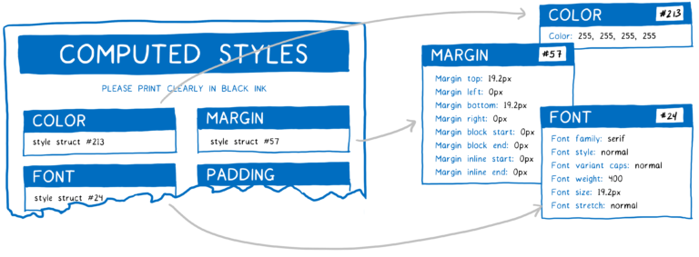이는 결국 메모리와 시간이 절약됩니다. 유사한 속성을 가지는 노드(형제 같은)는 공유하는 속성에 대한 동일 구조체를 가리킬 수 있습니다. 그리고 많은 속성이 상속되기 때문에 조상은 구조체를 자기 자신을 재정의하지 않은 자손과 공유할 수 있습니다.
그래서, 어떻게 빨라졌을까요?
그래서 최적화하지 않았을 때 스타일 계산이 어떻게 생겼는 지 봅시다.
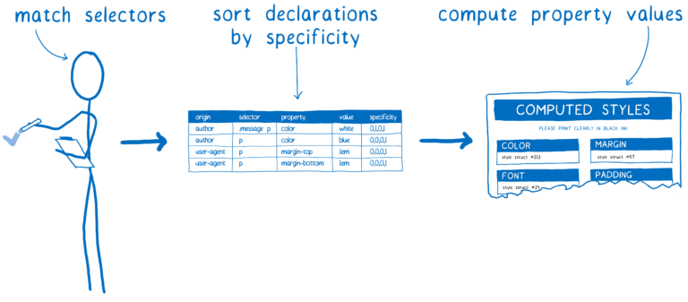여기에서 많은 일이 일어나고 있습니다. 그리고 이는 첫번째 페이지 로드 시에만 발생하는 것도 아닙니다. 사용자가 페이지와 상호작용하거나 요소위에 마우스를 올려 놓거나 DOM을 변경하여 스타일을 다시 트리거할 때 반복하고 반복합니다.
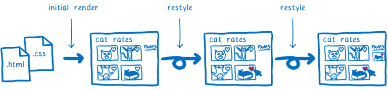즉, CSS 스타일 계산은 최적화하기에 훌륭한 후보입니다. 그리고 브라우저는 지난 20년동안 브라우저를 최적화하기 위한 다양한 전략을 테스트해왔습니다. Quantum CSS는 다른 엔진에서 사용한 전략을 최대한 활용하고 결합하여 초고속 새 엔진을 만듭니다.
그럼 이게 어떻게 동작하는 지에 대한 세부사항을 살펴봅시다.
병렬 실행
(Quantum CSS가 제공하는) Servo 프로젝트는 웹 페이지 렌더링의 모든 다른 파트들을 병렬로 작업하고자 시도하는 실험적인 브라우저입니다. 이게 무슨 의미일까요?
컴퓨터는 뇌와 같습니다. 여기엔 사고(ALU)하는 파트가 있습니다. 그 근처에는 단기 메모리(register)가 있습니다. 이들은 CPU와 함께 그룹화됩니다. 그리고서 장기 기억 장치인 RAM이 있습니다.
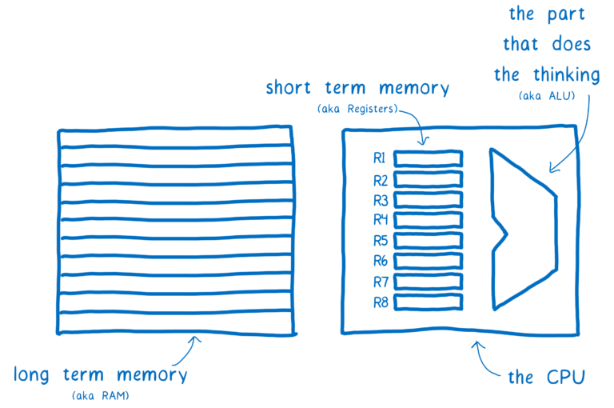초기 컴퓨터는 CPU를 사용하여 한번에 한가지만 생각할 수 있었습니다. 그러나 지난 10년동안 CPU는 여러개의 ALU와 레지스터를 코어에 그룹화하여 사용하고 있습니다. 이는 CPU가 여러가지를 동시(병렬)에 생각할 수 있음을 의미합니다.
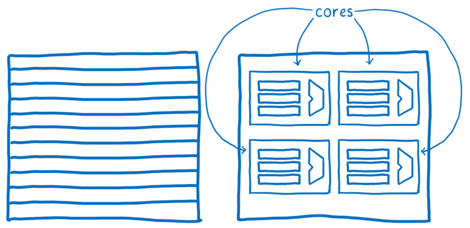Quantum CSS는 서로 다른 코어에서 다양한 DOM 노드에 대한 스타일 계산을 분할하여 컴퓨터의 최신 기능을 사용합니다.
이는 쉬운 일처럼 보일 수 있지만... 트리의 브랜치를 나누어 서로 다른 코어에서 동작시키는 것입니다. 이는 실제로 몇가지 이유로 훨씬 더 어렵습니다. 그 중 하나는 DOM 트리가 종종 고르지 않다는 것입니다. 즉 하나의 코어가 다른 코어보다 많은 작업을 수행할 수도 있습니다.
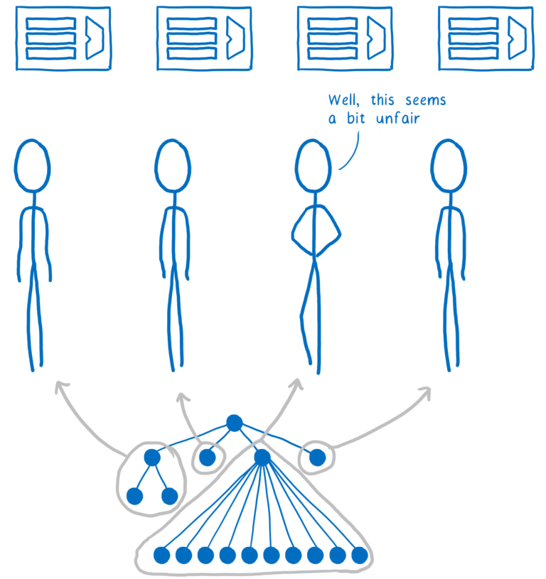작업의 균형을 맞추기 위해 Quantum CSS는 작업 훔치기 (work stealing)이라는 기술을 사용합니다. DOM 노드가 처리될 때 코드는 직접 자식을 가져와서 하나 이상의 "작업 단위 (work units)"로 분할합니다. 이 작업 단위는 대기열(queue)에 들어갑니다.
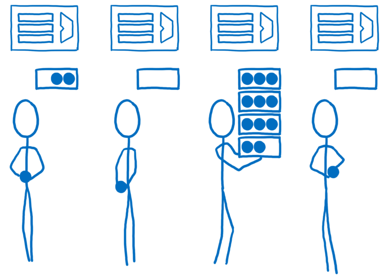하나의 코어가 대기열에 있는 작업을 끝냈을 때, 이 코어는 다른 대기열에서 할 수 있는 일을 찾습니다. 이는 우리가 시간을 들여 트리를 찾아내거나 미리 균형 잡을 방법을 파악하지 않고도 일을 균등하게 나눌 수 있음을 의미합니다.

대부분의 브라우저에서 이런 장점을 얻는 게 어려울 것입니다. 병렬 처리는 알려진 어려운 문제이며, CSS 엔진은 매우 복잡합니다. CSS 엔진은 렌더링 엔진의 가장 복잡한 부분인 DOM과 레이아웃 사이에 끼어있습니다. 따라서 버그 도출이 쉽고, 병렬 처리로 인해 data race라 부르는 추적이 배우 어려울 수 있습니다. [another article](https://hacks.mozilla.org/2017/06/avoiding-race-conditions-in-sharedarraybuffers-with-atomics/#data-race) 에서 이러한 버그에 대해 더 자세히 설명합니다.
만약 수백 수천명의 엔지니어가 기여할 수 있게 허용한다면, 공포 없이 어떻게 병렬로 프로그램할 수 있겠습니까? 여기서 우리가 가진 Rust가 나옵니다.
Rust를 사용하면 data race가 없는 지 정적으로 확인할 수 있습니다. 이 말은 처음부터 디버그 코드를 코드에 넣지 않으므로 디버그하기 까다로운 버그를 피할 수 있음을 의미합니다. 컴파일러는 그렇게 할 수 없습니다. 이 부분은 앞으로 작성할 아티클에서 더 자세히 설명하겠습니다. 이를 통해, CSS 스타일 계산은 당황스러운 병렬 문제(embarrassingly parallel problem)이라 불리는데, 효율적으로 병렬 처리할 수 있게 도와줍니다. 즉, 선형 속도 상승에 가까워질 수 있습니다. 컴퓨터에 4개의 코어가 있으면, 4배 가까이 빠르게 실행됩니다.
규칙 트리로 restyle을 빠르게 한다
각 DOM 노드에서 CSS 엔진은 셀렉터 매칭을 수행하기 위해 모든 규칙을 수행해야합니다. 대부분의 노드에서 이 매칭이 자주 바뀌지는 않습니다. 예를 들어, 만약 유저가 부모에 마우스를 올리면, 이 규칙은 바뀔 수도 있습니다. 속성 상속을 처리하기 위해 해당 자손의 스타일을 다시 계산해야하지만 해당 자손과 일치하는 규칙은 변하지 않을 것입니다.
어떤 규칙이 그 자손과 일치하는 지 기록할 수 있으면 좋을 것입니다. 그렇게 하면 셀렉터 매칭을 다시할 필요가 없습니다. 이것이 파이어폭스의 이전 CSS 엔진에서 차용한 규칙 트리입니다.
CSS 엔진은 일치하는 셀렉터를 알아내고 특이성별로 정렬하는 과정을 거칩니다. 이 과정에서 규칙의 링크드 리스트를 작성합니다.
이 목록은 트리에 추가됩니다.
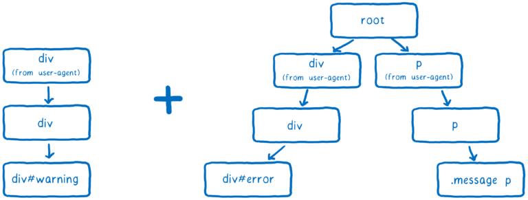CSS 엔진은 트리의 브랜치 수를 최소로 유지하려 합니다. 이를 위해 브랜치를 재사용하려고 합니다.
목록에 있는 대부분의 셀렉터가 기존 브랜치와 동일하다면, 동일한 경로를 따릅니다. 그러나 목록의 다음 규칙이 트리 내의 브랜치에 도달하지 않을 수도 있습니다. 이 지점에서만 새로운 브랜치를 추가합니다.
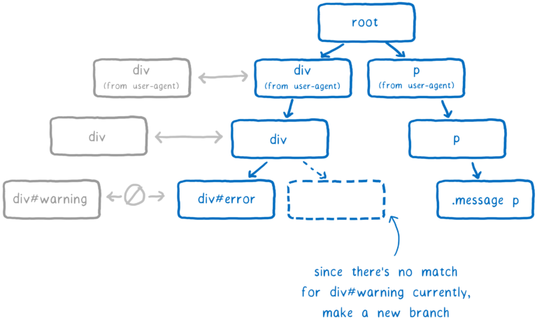DOM 노드는 마지막으로 삽입된 규칙에 대한 포인터를 얻습니다 (이 예제에서는, `div#warning` ). 이 것이 가장 구체적인 것입니다.
restyle에서 엔진은 부모의 변경으로 자식과 일치하는 규칙이 바뀌는 지 여부를 빠르게 확인합니다. 그렇지 않다면 어떤 자손에 대해서던 엔진은 자손 노드의 포인터를 따라 규칙에 도달할 수 있습니다. 그 지점부터 루트까지 트리를 따라가면서 매칭 규칙의 전체 목록을 얻을 수 있습니다. 즉 셀렉터 매칭 및 정렬 과정을 생략할 수 있습니다.
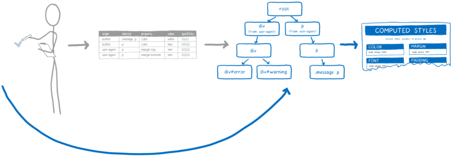따라서 이 작업은 restyle을 하는동안 필요한 작업을 줄이는 데 도움이 됩니다. 하지만 초기 스타일링 중에는 여전히 많은 작업이 필요합니다. 10,000개의 노드가 있다면, 여전히 셀렉터 매칭을 10,000번 해야합니다. 하지만 속도를 높이는 또다른 방법이 있습니다.
스타일 공유 캐시를 통한 초기 렌더 (및 cascade) 속도 향상
수천개의 노드가 있는 페이지를 생각해보세요. 이러한 노드 중 대다수가 같은 규칙과 매칭합니다. 예를 들어, 긴 Wikipedia 페이지를 생각해봅시다. 메인 컨텐츠 영역의 문장들은 모두 똑같은 규칙을 일치시켜야하며 정확히 같은 계산 스타일을 가져야합니다.
최적화 시키지 않았다면, CSS 엔진은 각 문장과 스타일을 개별적으로 일치시킵니다. 하지만 스타일이 문장에서 동일하다는 것을 증명할 수 있는 방법이 있다면, 엔진은 이 작업을 한번만 수행하고 각 문장 노드에 같은 계산된 스타일을 가리키게 하면 됩니다.
Safari와 Chrome에서 영감을 얻은 스타일 공유 캐시(style sharing cache)가 이런 일을 수행합니다. 노드 처리가 끝나면 계산된 스타일이 캐시에 저장됩니다. 그리고나서 다음 노드의 스타일을 계산하기 전에 몇가지 체크를 통해 캐시에서 무언가를 사용할 수 있는 지 살펴봅니다.
체크하는 것들은,
- 2개의 노드가 같은 id나 class, 혹은 그 외의 것을 가지는 지? 그렇다면 동일한 규칙을 적용합니다.
- 셀렉터 기반이 아닌 경우 (inline 스타일 같은), 노드가 동일한 값을 가지는 지? 그렇다면 위의 규칙 중 하나라도 덮어써지지 않거나 같은 방식으로 재정의됩니다.
- 두 부모가 같은 계산된 스타일 객체를 가리킵니까? 그렇다면 상속된 값도 동일합니다.
이러한 체크는 처음부터 스타일 공유 캐시에 있었습니다. 그러나 스타일이 일치하지 않을 수 있는 자잘한 케이스가 많이 있습니다. 예를 들어 CSS 규칙이 :first-child 셀렉터를 사용한다면, 위 검사를 통해 두 문장이 일치하지 않을 수도 있습니다.
Webkit과 Blink의 스타일 공유 캐시에서는 이러한 경우에는 포기하고 캐시를 사용하지 않습니다. 더 많은 사이트가 최신 셀렉터를 사용하면서 최적화가 점점 더 유용하지 않아져서 Blink 팀은 이를 제거했습니다. 그러나 스타일 공유 캐시가 이러한 변경사항을 따라갈 수 있는 방법이 있습니다.
Quantum CSS에서는 이상한 셀렉터를 모아 DOM 노드에 적용하는 지 확인합니다. 그리고 나서 답을 1과 0으로 저장합니다. 두 요소가 동일한 1과 0을 가진다면 우리는 그것이 확실히 일치한다는 걸 알 수 있습니다.
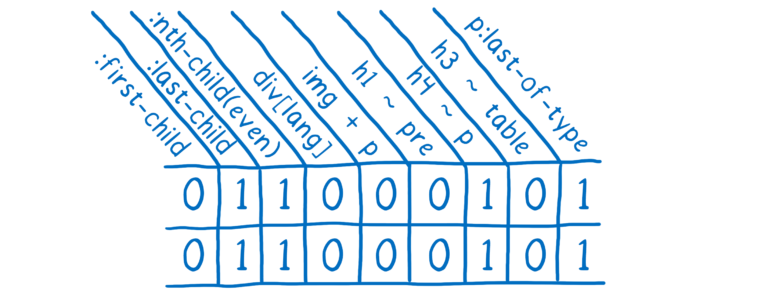만약 DOM 노드가 이미 계산된 스타일을 공유할 수 있다면 대부분의 작업을 생략할 수 있습니다. 페이지는 종종 같은 스타일을 가진 많은 DOM 노드를 가지고 있기 때문에, 이런 스타일 공유 캐시는 메모리를 절약할 수 있으며 실제로 작업 속도를 향상시킵니다.
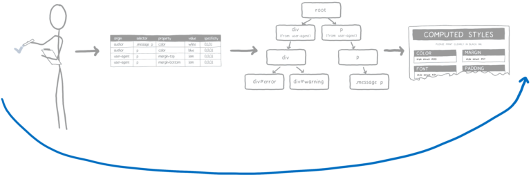결론
이는 Servo 기술을 Firefox로 옮긴 첫번째 큰 기술 이전입니다. 그동안 Rust로 작성한 최신 고성능 코드를 Firefox의 코어로 가져오는 방법에 대해 많은 것을 배웠습니다.
사용자가 처음으로 경험할 수 있도록 프로젝트 Quantum의 큰 덩어리를 준비하게 되어 매우 기쁩니다. 당신이 이걸 써보길 바라며, 당신이 찾은 어떤 이슈던 공유해주세요.
Lin Clark에 대해
Lin은 Mozilla Developer Relations 팀의 엔지니어입니다. 그녀는 JavaScript, WebAssembly, Rust 및 Servo를 사용하고 code cartoons를 그립니다.